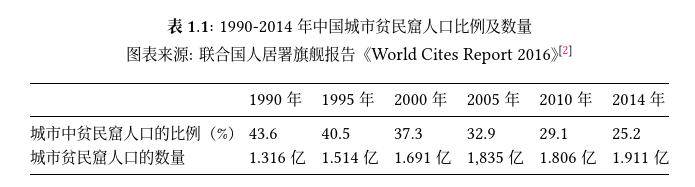

空间生产之曾经的城中村的基本概念
所谓城中村者，城市和村庄性质兼而有之：它深处城市之中，作为城市的一部分，周边均具城市特征，自身却充斥着农村式的无序和自然，缺乏人工的总体规划，各家各户的宅地界限比纯粹的村庄还要不清晰和混乱，基础设施（能源、通讯、供水、交通、安全、卫生、医疗、文化等）薄弱，原生住户基本为农村户籍，土地制度仍为农村集体所有制而非城市的全民所有制；作为农村，它的外来流动人口数量数倍，甚至数十倍于原生居民，耕地被大量或完全占用，转为商业或住宅地产，耕地的这种性质转变使原生居民原先赖以生存的农业收入转为地产收入，并成为原生居民收入的重要来源。
2016年《联合国人居三筹备委员会第三届会议政策文件10：住房政策》（文号A /CONF.226/PC.3/23）对贫民窟词条所作的解释为：
人居署《世界城市状况》文件指出，贫民窟的生活和环境条件最为恶劣，诸如供水不足，卫生恶劣，住房拥挤且破旧不堪，所处地点存在危害，保有权无保障，易受严重健康风险的危害。
自2003年起，联合国会员国商定将贫民窟家庭定义为生活在同一屋檐下,但缺乏以下五项条件中的一项或多项的一组个人：(a) 能得到经改善的饮水；(b)用得上经改进 的卫生设施；(c)充足的居住面积，不过于拥挤；(d)住宅的结构质量/持久性；(e) 土地保有权的保障。
结合中国政府棚改文件，我们通常所说的城中村属于中国政府定义的“棚户区”，且多为“城市棚户区”，城中村也符合联合国所定义的贫民窟。[1]
中国的城市贫民窟人口有多少呢？联合国根据它对贫民窟的定义测算数据如下： 
根据《国家新型城镇化规划（2014-2020年）》，我国预计“到2020年基本完成城市棚户区改造任务”。根据李克强总理在2018年第十三届全国人大一次会议所作政府报告，“棚户区住房改造2600多万套，农村危房改造1700多万户，上亿人喜迁新居”。全国轰轰烈烈兴起的棚户区改造跑步前进，新型城镇化取得惊人成绩，这同时也标志着，曾经遍布每个城市的老式城中村的大量消亡。
下一章笔者介绍自己对济南市丁家新村的简单调查和感受，下下章笔者将结合各方文献总体探讨中国式空间生产并提出批评和建议。
[1]孟繁瑜, 刘红海. 城市化过程中的贫民窟问题[S/OL]. 中国城市报, 2015(07).
[2]UN-HABITAT. World Cities Report 2016: Urbanization and Development - Emerg-ing Futures[M]. [S.l.]: United Nations, 2016 (引用页: 1).